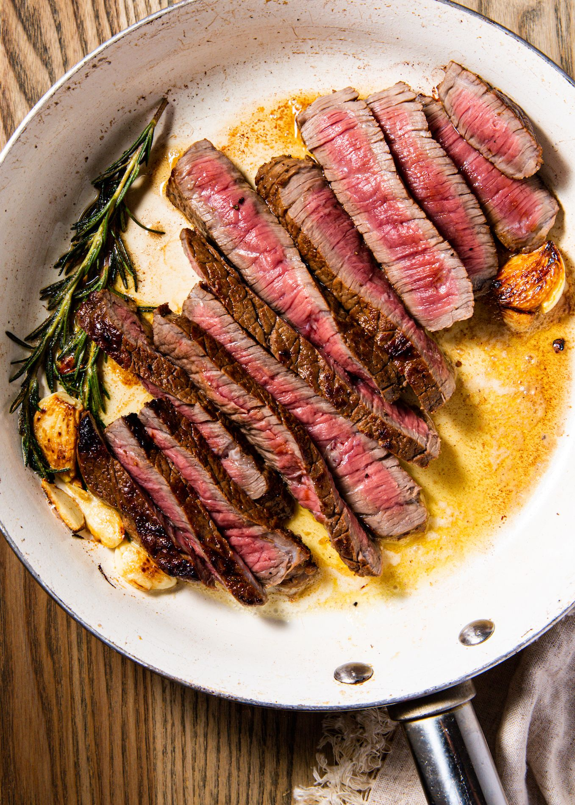

Steak

Ingredients:
- 1 ribeye
- Parsley
- 3 cloves of garlic
- Unsalted butter
- Oil
- Salt and Pepper
- Season ribeye with salt and pepper on cutting board
-
Leave it for 3 minutes. While resting put oil in pan and heat it
high heat.
-
Place steak into pan and push down. Flip each side for 5 minutes for
medium rare.
-
After each side for 5 minutes, turn the heat to medium-low and add
butter, parsley and garlic into the pan
-
When butter melts, use a spoon and pour the butter over the steak
multiple times for 4 minutes or until internal temp reaches 130°F
-
Rest the steak for 5 minutes and after that it is ready to be
served.
Tips
-
Basting and resting the steak makes sure all the juices stay inside
the steak so that the flavors are still there when eaten. Basting
also helps include the parsley and garlic flavor.
-
If you want steak other than medium rare, add 30 seconds for each
side for every tier cooked. For example, for medium cook each side
for 5 minutes and 30 seconds and baste for 4 minutes and 30 seconds.
-
If you are feeling more asian, you can cut the steak and add
japanese BBQ rice onto the steak and serve with rice.